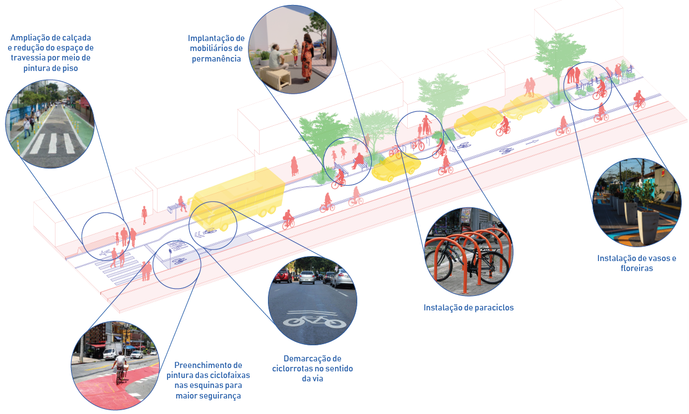
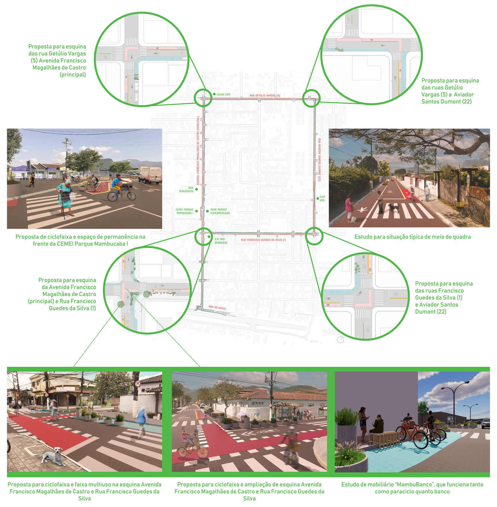

Como vamos fazer?
( As imagens abaixo são meramente ilustrativas )

O Projeto Piloto
O projeto piloto será desenvolvido na Avenida Francisco Magalhães de Castro (principal) e nas rua Getúlio Vargas (5), Aviador Santos Dumont (22) e Francisco Guedes da Silva (1). A partir do diagnóstico, percebeu-se nessa área um fluxo intenso de pessoas, ciclistas e veículos motorizados; forte presença de comércios; concentração de pontos de conflito registrados pela população; presença das escolas, e é um eixo importante de acesso e circulação no bairro.
A ideia do projeto piloto é testar soluções de desenho urbano, visando maior segurança e facilidade no deslocamento de ciclistas e pedestres. Confira aqui algumas propostas, estudos e desenhos em andamento do projeto!
